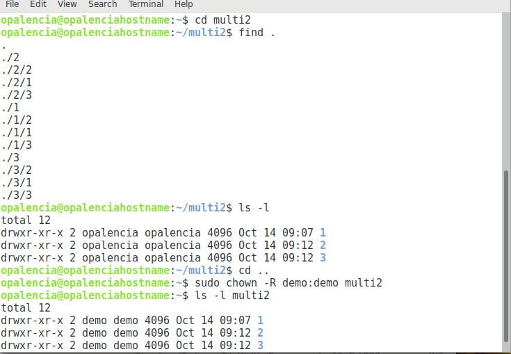

Cambiar propietario y grupo de archivos > chown¶
Nombre del comando: chown
Man page online: https://linux.die.net/man/1/chown
Descripción: Cambiar propietario y/o grupo de archivos. Para cambiar tanto el dueño como el grupo a un archivo o carpeta se usan los dos puntos, asi: usuario:grupo. Éste comando requiere privilegios de sudo, de no anteponerlo da la advertencia de “operación no permitida”.
Man page local: $ man chown o $ man chown > chown.txt
Instalado por defecto: Sí, al menos en Debian.
Algunas Opciones:
-R, -r, --recursive Cambiar en archivos y directorios recursivamente.
-v, --verbose Explique qué se está haciendo.
-c, --changes Igual que verbose pero informa sólo cuando se realiza un cambio.
Ejemplo 1: $ sudo chown -c root:root multi2, en este ejemplo le cambio el propietario y grupo a la carpeta “multi2”, ahora el dueño será el usuario “root”; pero no así de su contenido interno.
Ejemplo 2: $ sudo chown -R demo:demo multi2, aquí cambio el propietario y grupo a la carpeta “multi2”, ahora al usuario y grupo “demo” les pertenece todo el contenido de dicha carpeta.
Ejemplo 3: $ sudo chown -vR :opalencia multi2, en este ejemplo le cambio únicamente el grupo a la carpeta “multi2”, el dueño sigue siendo “demo”, pero no así el grupo que ahora pertenece a “opalencia”.